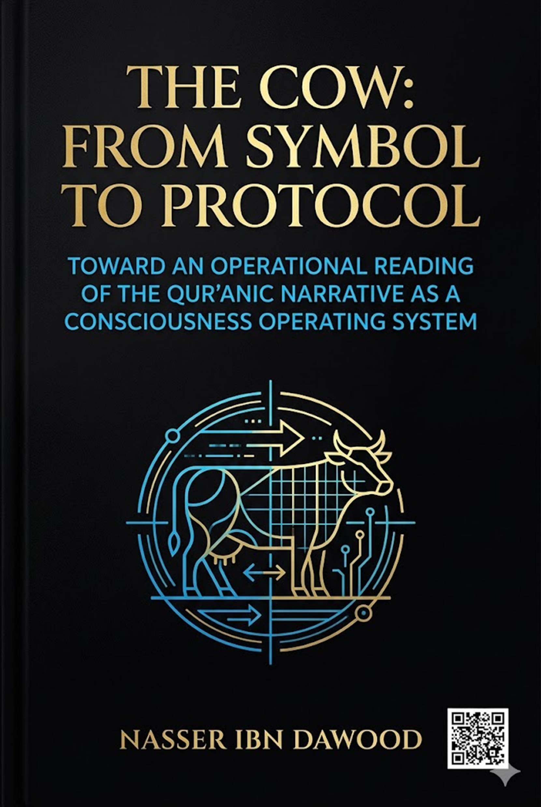

## Toward a Operational Reading of the Qur'anic Narrative as a Consciousness Operating System
### A Condensed Conceptual Translation for the International Reader
---
Knowledge is a universal right. The author firmly believes that wisdom should not be locked behind paywalls or language barriers.
- **Global Access Policy**: All books in this library are available for free in multiple digital formats (PDF, HTML, DOCX, TXT).
- **The Digital Library**: As of early 2026, the collection hosts 68 volumes (34 in Arabic and 34 in English), fully optimized for AI-assisted research and digital archiving.
- **Official Platforms**:
- Main Website: nasserhabitat.github.io/nasser-books/
- GitHub: nasserhabitat/nasser-books
---
This English edition is a condensed conceptual adaptation. It is not a word-for-word translation, but rather an "extraction of essence." It presents the core philosophical framework in accessible English, omitting the exhaustive linguistic debates and classical references found in the original Arabic text.
For the academic researcher: The original Arabic version remains the primary source for comprehensive linguistic analysis, detailed exegesis (Tafsir), and the complete bibliography.
---
For centuries, Islamic consciousness—in its interpretive and educational manifestations—has treated Qur'anic stories as historical records or moral lessons, without penetrating the deep cognitive structure that organizes these narratives within the Qur'anic system. This reading has reduced the operational function of the text, transforming the Qur'an from a living structure for reshaping human beings into a text recited for blessing or cited as evidence.
This crisis is clearly evident in how the story of "the Cow" is approached. It is often read as an event that happened to the Children of Israel, involving a divine command to slaughter a cow to solve a mysterious murder. Then—at best—a lesson is extracted about obedience or avoiding excessive questioning. However, this level of reading, while partially correct, keeps the text on its surface and neglects the possibility that the story itself is part of a **cognitive protocol** aimed at redesigning human perception.
**Central question of this book:**
> Can "the Cow" in the Qur'an be read not merely as a physical animal or historical event, but as a structural symbol within a Qur'anic system that works to dismantle rigid tradition, revive dormant consciousness, and reboot collective intelligence?
---
Returning to Arabic lexicons, the root (B-Q-R) fundamentally revolves around one central meaning: **splitting, opening, and revealing what is inside**.
- *Baqara al-ard* (he split the earth): plowed or excavated it
- *Baqara al-batn* (he cut open the belly): to reveal its contents
- *Baqara al-mas'ala* (he split the question): explored it deeply
- *Tabaqqara fi al-'ilm* (he became deeply learned): immersed himself in knowledge
Thus, "Baqr" is not mere cutting—cutting might be separation or destruction—but splitting with the purpose of **revealing or extracting**. The cow (al-baqarah) as an animal is named for its function: it splits the earth through plowing.
In the Qur'an, the story follows the same logic: a hidden murder, a command to slaughter a cow, striking the victim with part of it, then resurrection and revelation.
---
Each letter in Arabic carries a semantic field:
| Letter | Core Meaning |
|--------|---------------|
| **B (ب)** | Beginning, entering,
interiority
|
| **Q (ق)** | Penetration, force,
cutting through
|
| **R (ر)** | Vision, seeing,
rootedness, stability |
Thus, **B-Q-R** becomes a three-stage cognitive algorithm:
1. **B** = Initiation / entering the depth
2. **Q** = Penetration / breaking through barriers
3. **R** = Vision / arrival at truth and stability
---
The root (B-Q-R) can be broken into two integrated pairs:
**BAQ + QAR**
- **BAQ** = Breaking through / revealing / initial opening
- **QAR** = Settling upon the truth / vision / stability
Thus, **Baqara** means: a process of penetration and unveiling that ends in the stabilization of knowledge. The word itself is a dynamic movement from *breaching the surface* to *securing insight*.
When applied to the story, the "cow" becomes not just an animal but **what needs to be breached, examined, and liberated**.
---
The Qur'anic description of the cow offers a diagnostic protocol for stagnant systems:
| Description | Symbolic Meaning |
|-------------|-------------------|
| "Yellow, intensely yellow, pleasing to the beholders" | Superficial beauty, dazzling appearance that hides inner decay |
| "Not broken (tame) to plow the earth" | Non-functional, unable to move reality |
| "Nor does it water the soil" | Cannot nourish the future; cognitive infertility |
| "Sound, with no blemish" | Claims of perfection and immunity from criticism |
Thus, **slaughtering the cow** is not mere killing but **removing a stagnant system from its position of dominance**—liberating the cognitive field from a sterile idea.
The verse "Strike him with part of her" (2:73) reveals the core algorithm:
> The dead (consciousness/truth) is revived only through the dissected parts of the cow—meaning that the very system that caused stagnation, once dismantled, becomes the tool for awakening.
---
The story operates within a broader network of symbols:
| Symbol | Meaning |
|--------|---------|
| **The Calf** | Cognitive regression to idolatry (literal or figurative); worshiping the tangible, the image, the man-made |
| **The Cow** | The rigid, stagnant system that once was productive but became a burden |
| **Tur (Mount Sinai)** | The horizon of ascent; a new stage of covenant and responsibility |
**The complete civilizational path:**
>Calf (worship of illusion) → Cow (dismantling stagnation) → Tur (ascent to a higher covenant)
This is not merely a historical sequence but a permanent **operating system for individual and collective transformation**.
---
The concept of *Mathani* (paired/dual structures) in the Qur'an (39:23) is not just repetition. It refers to:
- Symmetry
- Opposition
- Reflection
- Complementarity
The entire Qur'an exhibits recurring algorithms:
- Adam: fall → learning → vicegerency
- Abraham: slaughter → dispersal → revival
- Moses: exodus → purification → covenant
Thus, the Qur'an is not merely an informational or moral text but an **operating system** that:
1. Presents the problem
2. Diagnoses it
3. Dismantles rigidity
4. Rebuilds consciousness
5. Propels to action
---
(This chapter integrates the psychological-spiritual dimension with the three stages of the self mentioned in the Qur'an.)
**1. The Commanding Self (al-nafs al-ammārah) = The Calf**
> *"Indeed the soul is a persistent enjoiner of evil"* (12:53)
The calf is not only an external idol but the embodiment of desire, illusion, and attachment to false references.
**2. The Self-Loathing/Conscious Self (al-nafs al-lawwāmah) = The Slaughter of the Cow**
> *"I swear by the Day of Resurrection, and I swear by the self-reproaching soul"* (75:1-2)
Self-reproach is the beginning of *baqr* (splitting open) internal certainties. It is questioning, dismantling, and confronting one's own stagnation.
**3. The Serene Self (al-nafs al-muṭmaʾinnah) = The Revival of the Slain and Ascending Tur**
> *"O serene soul, return to your Lord, pleased and pleasing"* (89:27-28)
After slaughtering the cow and reviving the slain, consciousness settles into peace, certainty, and readiness for a new covenant.
1. **Observe the daily "Calf"** – What do you derive your worth from besides God? (Desire, wealth, status, addiction)
2. **Diagnose the "Cow"** – What habit, idea, or relationship paralyzes your growth and appears untouchable?
3. **Activate the "Self-Recriminating"** – Ask a bold critical question: Why do I repeat this? What if I stopped?
4. **Perform the "Slaughter"** – Take a decisive, practical step of cutting or changing today.
5. **Strike the slain with part of it** – Transform the pain of letting go into new awareness.
6. **Ascend Tur** – Commit to a new covenant; fill the void with constructive action.
---
This book has traced a journey:
> From the root (B-Q-R) → to the letter (B, Q, R) → to the paired structure (BAQ + QAR) → to text → to symbol → to network of symbols → to operating system.
The cow story is not about an animal. It is a **cognitive protocol** for:
- Dismantling rigid traditions
- Exposing hidden realities
- Reviving dormant consciousness
- Reordering collective and individual intelligence
The ultimate goal is to demonstrate:
> **That Qur'anic stories are not just historical memory but operational algorithms for redesigning human beings.**
What threatens our age is not just the "calf" in its modern forms, nor the "cow" in its cultural manifestations, but the absence of **Tur**—the absence of a project of ascent.
Hence, this book is not merely an interpretation but a methodological call:
- To **split open (baqr)** assumed certainties
- To **slaughter** what paralyzes growth
- To **revive** genuine meanings
- To **ascend** to new stages of being
From here begins the real journey: reading the Qur'an not as history, nor as law alone, nor as mere moral exhortation, but as **consciousness engineering, an operating system, a liberation protocol, and a vicegerency program**.
> *"He has succeeded who purifies it, and he has failed who buries it"* (91:9-10)
---
- Civil engineer specialized in metallurgy (University of Mons, Belgium)
- Born in Morocco, April 27, 1960
- Full-time researcher in Qur'anic linguistics and digital manuscript analysis
**Core Philosophical Principles:**
- Knowledge of the Qur'an is a cumulative, collective journey, not an individual infallible discovery.
- The text alone has absolute authority; no human interpretation is sacred.
- All works are open access, free, and continuously revisable.
---
**End of Condensed Translation**
*For full linguistic analysis, extensive references, and detailed exegesis, please refer to the original Arabic edition.*